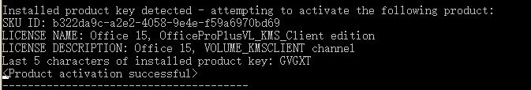

韩邦泽软件发布
FreeKMS
FreeKMS是一款安全、可靠的在线激活工具，可激活VL版Windows和Office.

下载地址
1.0版本
SHA-256校验值：573d3486dd11537c4a82105d80c55076e7b4f0bcf27d387387943209b4c5f6de
1.1版本
SHA-256校验值：BC985FAD65904EBDF6CBD27678AB888E613B47767A85E93EB84D087675753368